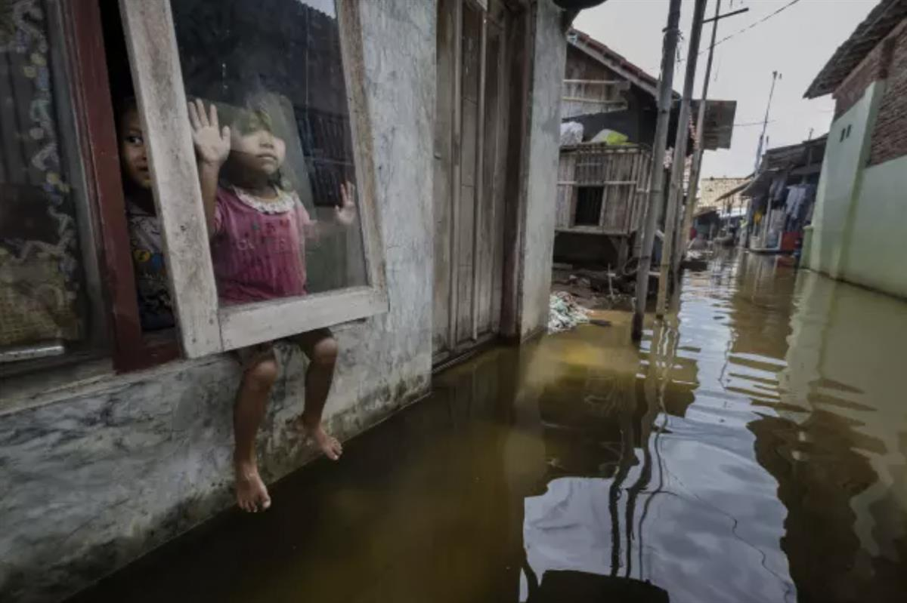
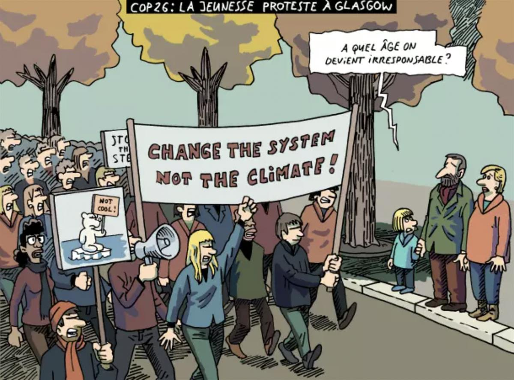

Journalism in the face of the Environmental Crisis
Between May 2 and 4, Chile and UNESCO will host the 31st World Press Freedom Day Conference.
World Press Freedom Day will be dedicated to the importance of journalism and freedom of expression in the context of the current global environmental crisis.
World Press Freedom Day 2024
A Press for the Planet: Journalism in the face of the Environmental Crisis
2-4 May 2024
Centro Cultural Gabriela Mistral, Santigo, Chile
UNESCO/Huaui Roa
This Story must be Told – UNESCO campaign for #WorldPressFreedomDay
All stories deserve to be told. But this one may be particularly decisive.
The climate and biodiversity crisis are not only affecting the environment and ecosystems but also the lives of billions of people around the world. Their stories of upheaval and loss deserve to be known and shared. They are not always pretty to watch. They can even be disturbing. But it's only by knowing that action is possible. Exposing the crisis is the first step to solving it.
That's why the role of journalists is crucial. It is through their work, their courage and their perseverance that we can know what is happening across the planet. They work on the frontlines of our collective fight for the health of our planet and our struggle for livable lives. On this World Press Freedom Day, let’s recognize and celebrate their work in helping us shape a better future.

Alain Schroeder
Press cartoons for the Planet
On the occasion of World Press Freedom Day, UNESCO and Cartooning for Peace launch a series of cartoons in support to a Press for the Planet!

Herrmann/Cartooning for Peace
Commemorations around the world
Dis and misinformation around the climate crisis
In the context of the world's triple planetary crisis (climate change, biodi-versity loss, and air pollution) dis- and misinformation campaigns challenge knowledge and scientific research methods. Attacks on the validity of science pose a serious threat to pluralistic and informed public debate. Indeed, misleading and false information about climate change can, in some cases, foster doubt and incredulity about environmental issues, their impact and urgency, and undermine international efforts to address them.
Dis- and misinformation about environmental issues can lead to a lack of public and political support for climate action, effective policies, and the protection of vulnerable communities affected by climate change, as well as of women and girls, as climate change tends to exacerbate existing inequalities.
To address this flood of disinformation in the digital ecosystem, UNESCO launched in November 2023 the Guidelines for the governance of digital platforms. If implemented in their entirety, the Guidelines will empower all relevant stakeholders to put in place a governance system that can foster freedom of expression while tackling the negative externalities.
SOURCE: UNESCO